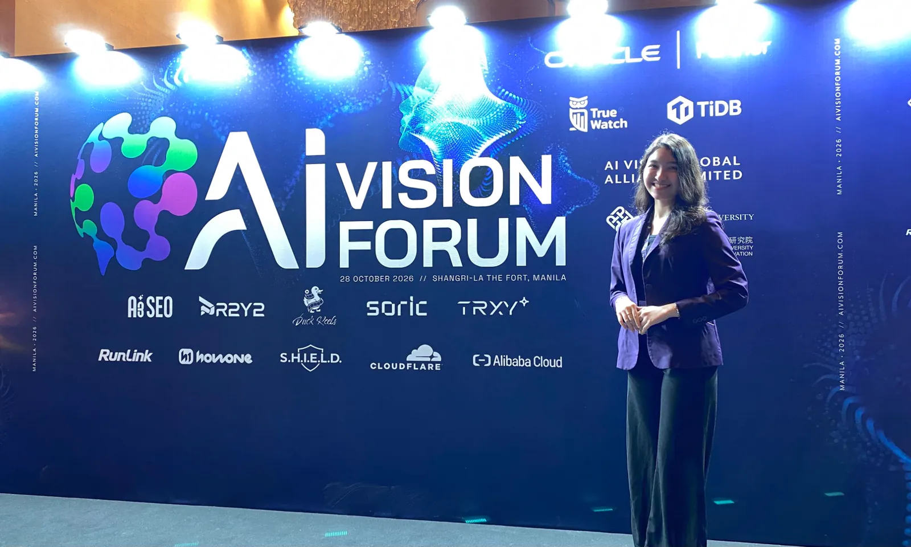

events / aivf manila 2026
AI Vision Forum Manila 2026
The youngest person in the room, and the winner of the AI Vision Challenge

“The greatest risk in AI is not moving too quickly, it is moving too slowly and getting left behind.”Rom Gapuz, Huawei Cloud Philippines
A room full of builders
On October 28, I attended the AI Vision Forum Manila 2026 at Shangri-La The Fort. Walking into a room packed with business venture leaders, solution architects and seasoned tech experts as a senior IT student felt intimidating at first. I knew I had the least experience in the room, but that also gave me the biggest opportunity to learn.
The forum gave me the reality check I needed. Instead of treating AI as a distant concept, these leaders broke down how it is actively scaling businesses today.
Start small, ask why
Scaling AI can feel overwhelming, and this is where advice from industry leaders like Kou Fuh Tey of Oracle and Gary Huang of Alibaba Cloud grounded the discussion. Their strategy: find a specific problem and test a simple use case first. From there, use cloud infrastructure to scale what actually works.
Real innovation isn’t about having all the answers. It’s about starting small, asking the right “why,” and having the courage to experiment.
Winning the AI Vision Challenge
The highlight of my day was taking part in, and winning, the AI Vision Challenge. When asked about my goals, I shared my drive to leave the forum equipped with the right insights to adapt and use AI effectively. The exclusive AIVF power bank was a great bonus, but the real prize was the validation.
It reminded me that being the youngest person in the room is never a limitation. It’s an open invitation to listen, learn and step up to the challenge. I’m carrying this momentum into my final year of tech studies and beyond.
photos
tap to enlargephotos by ai vision forum and me ·event feature ↗ · original post on linkedin ↗